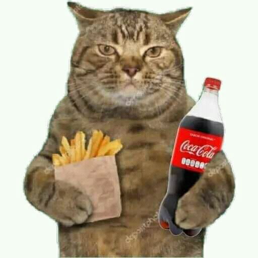

El Elixir del Estudiante: Café, Coca-Cola y Papitas para la Verdad Académica
Descubre cómo estos "aliados" inesperados pueden ser tu salvación en la vida universitaria.
1. El Café: El Despertar de la Sabiduría
Esa primera taza de café por la mañana no es solo una bebida, es un ritual, una promesa de lucidez. Antes de que el profesor empiece a desglosar la teoría de la relatividad o la filosofía kantiana, el café ya ha activado tus neuronas, preparándote para absorber cada gota de conocimiento. Es el combustible que transforma el bostezo en una pregunta perspicaz.
Muchos estudiantes juran que sin su dosis diaria de cafeína, la verdad absoluta permanecería oculta tras una neblina de somnolencia. Es el compañero fiel de las madrugadas de estudio y el salvavidas de las clases de primera hora.
2. La Coca-Cola: El Chispazo de la Revitalización
Cuando el café ya no surte efecto y el cerebro amenaza con entrar en modo hibernación, llega la Coca-Cola. Ese dulce y burbujeante néctar no solo te da un subidón de azúcar, sino que su cafeína adicional y su sabor inconfundible actúan como un reinicio instantáneo. Es el "power-up" que necesitas para esa última hora de clase o para terminar ese ensayo que parecía interminable.
Algunos dirán que es una bebida poco saludable, pero para el estudiante al borde del colapso, es una herramienta de supervivencia. Un sorbo y, de repente, las ideas fluyen, los apuntes cobran sentido y la verdad académica se vuelve un poco más accesible.
3. Las Papitas: El Crujido de la Concentración
Y para acompañar estos elixires líquidos, ¿qué mejor que unas buenas papitas? El crujido rítmico no solo satisface el hambre, sino que también puede ser un extraño catalizador para la concentración. Es un pequeño placer que rompe la monotonía del estudio sin ser una distracción mayor.
Ya sean Inka Chips, Lays o cualquier otra marca, las papitas son el snack perfecto para mantener la energía y la moral alta. Cada crujido es un pequeño recordatorio de que, incluso en los momentos más intensos de la búsqueda del conocimiento, hay espacio para un poco de indulgencia.
El Resultado: Un Estudiante Feliz y Productivo
La combinación de café, Coca-Cola y papitas no es solo una dieta de supervivencia, es una estrategia. Es la forma en que muchos estudiantes encuentran su ritmo, su energía y, en última instancia, su camino hacia el éxito académico. No es la solución definitiva, pero es un método probado para mantenerse a flote.
¡Así que la próxima vez que te sientas abrumado, recuerda a tus tres mosqueteros académicos!